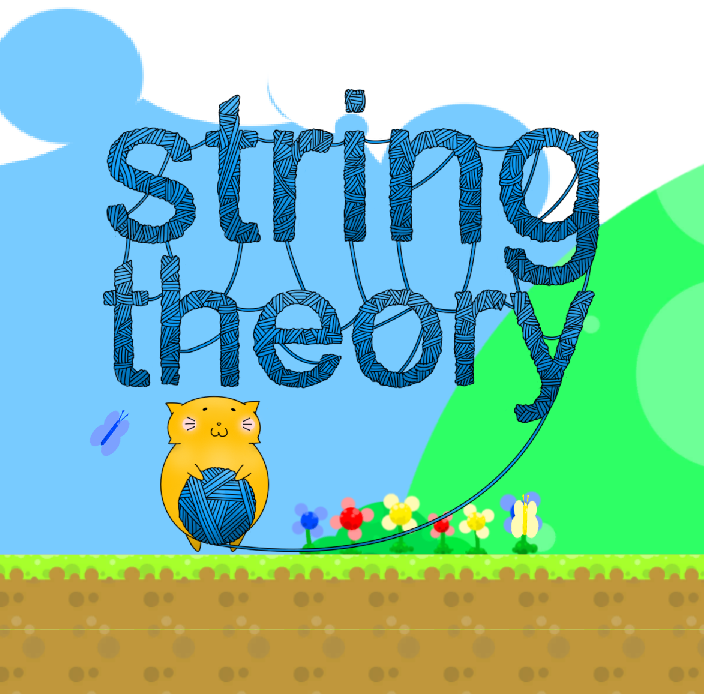

A Game Jam Game
String Theory is a 2D Puzzle Platformer.
Wang is a fish that only wants to survive. But George is a cat whose hunger knows no bounds! Help George satisfy his cravings by guiding him to Wang. He may be a little too chubby to move around, but that's why he always carries around his teleporting yarn! Watch out for tentacle traps though, as they may might just fancy your yarn as a snack.
I worked on String Theory as a Programmer in a team of 7 people.
Personal Growth
- Game JamCreating games in a short span of time, usually between 1 and 3 days.
- Programming
- Teamwork

Team Members
- Eric Ngo (Producer)
- Shane Yamamoto (Program)
- Jonathan Stevens (Program)
- Wesley Wu (Program)
- John English (Design)
- Ben Everett (Design)
- Max Chung (Artist)
- James Copeland (Sound)
About
By this time, I had been around UCI's Video Game Development Club (VGDC) for about 3 months. At the time, I had become well known within the club as the person who showed that sound design was possible in a collegiate game-making club. I even went so far as to finally create and lead an audio department for the club (it didn't exist before). I think that, for that reason, a lot of people were surprised when I desided to work as a programmer instead.
I chose to work as a programmer since I was studying in the field of CSComputer Science after all. I felt that making music, even though it was a strong passion of mine, wouldn't get me very far, in academics and career. Also since it was my first time being introduced to the idea of a game jamCreating games in a short span of time, usually between 1 and 3 days., I thought 'why not try out something new?'. Since game jams are a less-serious work, I figured could get some learning in without hindering my teammates.
For this game jam, since most of us were beginners at working on this kind of project, we opted to use Google DriveA place to store your files online, visible to others in a group instead of a more formal repository such as Git. I'm very satisfied with my overall experience from this event.